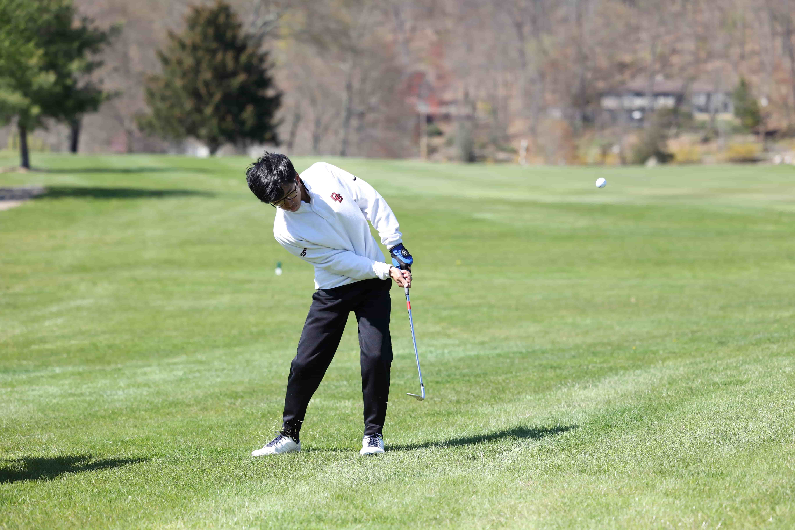

Extracurriculars

Golf
I started playing golf when I was 5 years old. My father used to
bring me along with him to the golf course and I instantly developed a love for the game. I have played in
over 200 junior golf tournaments over a period of 9 years and have been on my school's varsity golf team for
4 years.

Cubing
I began competitive Rubik's Cube Solving in 2015, when my
parents bought me a cube for Christmas. I have been to 13 total competitions and have completed 381 official
solves. At one point, I was ranked top 300 in the world and top 100 in the USA for my 2 main events. My
WCAID is 2018VIRA02.
Robotics
I have been a programmer on my school's robotics team for all 4
years of my high school career. In 2021 and 2022, I was the lead programmer on my school's freshman and JV
robotics teams. In 2023, I was the backup programmer on my school's varsity FRC team and this year, I will
be the lead programmer on the team.

Music
I have been playing piano for 11 years, and I have been playing
violin for 4. I have been a member of my school's string orchestra for all 4 years of high school and have
played in numerous piano recitals. My school's string orchestra plays at masses, has concerts and other
events where the school needs us to play music.
Media
I joined the media club as a freshman and served as a technical
assistant for two years before being promoted to lead technical director. I gained experience in areas of
media such as filming, video editing, graphic design, social media management and livestreaming. I
personally manage the golf team's Instagram account, @boscogolf, feel free to follow!